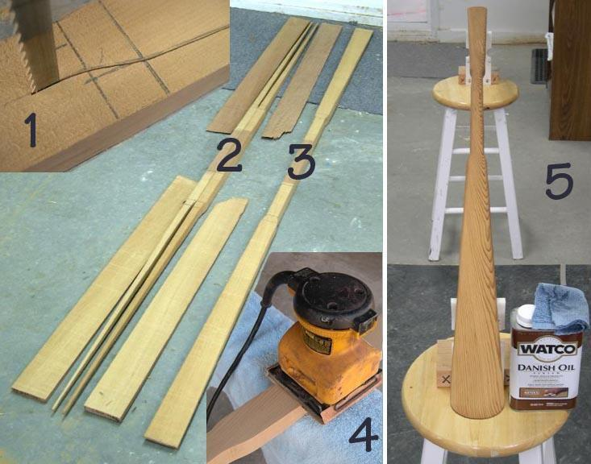

| Greenland Paddle Construction | Menu Last Page Next Page |
|
 The non-traditional paddle construction method described in this section relies heavily on a band saw to remove most of the wood from a cedar or redwood 2 X 4 ( 1.5" X 3.5"), and follows-up with a palm sander to perform all final shaping and sanding. A block plane or other shaping tools can also be used . The numbered collage above illustrates the basic elements in this simplified paddle construction method. 1. A bandsaw is used to cut out the paddle blank. 2. The remnants of the 2 X 4 after the bandsaw has done it's job. 3. The completed paddle blank. 4. A palm sander is used to shape and sand the paddle blank. 5. The completed paddle is finished with Danish oil. In the following pages, construction of a Greenland paddle, a modified Aleut take-apart paddle, and an ABS travel case will be discussed. |
|